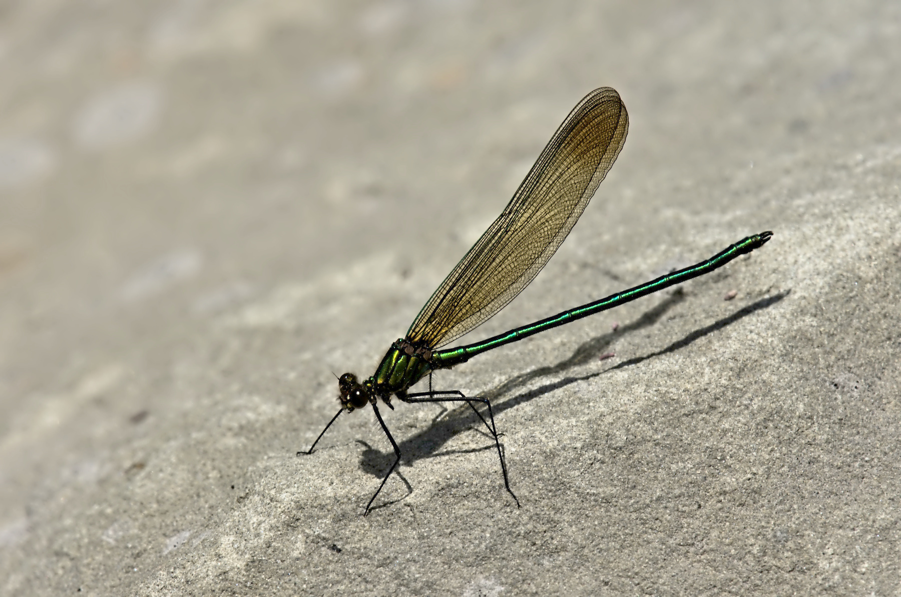

Superb Jewelwing
Calopteryx amata

Superb Jewelwing male (photo: JDee, Rock Road, June 16 2022)
Identification
- Large damselfly (body length ~45–54 mm, wingspan ~65–75 mm)
- Males: Velvety black body with brilliant metallic green or blue-green highlights on thorax and abdomen; wings broad, mostly clear with small white pterostigma near tip
- Females: Similar metallic body but duller; wings smoky brown with white spots near tips
- Distinctive slow, fluttering flight along shaded streams
- Differs from Ebony Jewelwing by having more metallic sheen and less extensive white in wings
Habitat
Prefers small to medium-sized shaded forest streams and brooks with slow to moderate current, clean water, and abundant overhanging vegetation or woody debris. Nymphs develop in the water; adults perch on leaves, rocks, or branches near the water's edge. Sensitive to pollution and prefers undisturbed, well-forested sites.
Flight Season in NB
Typically mid-June to late July (earliest ~June 5, latest ~July 30 based on records). Peak activity in June–July. Shorter flight period than Ebony Jewelwing in the province.
Distribution & Notes
Local in New Brunswick, primarily in southern and central regions with suitable shaded streams. Less widespread than Ebony Jewelwing but can be locally common at good sites. Excellent indicator of high-quality, forested stream habitats.
Similar Species
Ebony Jewelwing (Calopteryx maculata) — males have fully black wings with larger white spots; more common and widespread in NB.
River Jewelwing (Calopteryx aequabilis) — wings have broad dark central band; prefers larger, more open rivers.